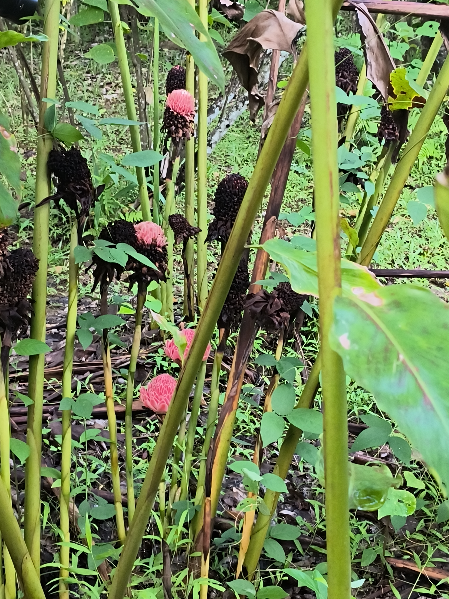

Specimen
Specimen
这是我们组制作的腊叶标本，种类为粗糠柴。
粗糠柴（Mallotus philippensis (Lamarck) Müll. Arg.）是大戟科野桐属小乔木或灌木。粗糠柴的小枝、嫩叶和花序均密被黄褐色短星状柔毛；叶互生或有时小枝顶部的对生，长圆形或卵状披针形，顶端渐尖，基部圆形或楔形，下面被灰黄色星状短绒毛叶脉上具长柔毛，散生红色颗粒状腺体；花为花序总状，顶生或腋生；果为蒴果扁球形；种子卵形或球形，黑色，具光泽；花期４－５月，果期５－８月。
粗糠柴分布于中国南方多地。粗糠柴喜光，不耐荫蔽，但耐干燥瘠薄土壤，在酸性土和钙质土上都能生长。常见分布于稀疏的林内和灌木丛中，多见为灌丛状，保护良好可成乔木，在郁闭的原始林中则未见有生长。
粗糠柴具有药用价值，叶可入药，味淡、涩、性平；可以止血、生肌；外用可用于外伤出血和疮疡溃烂。粗糠柴有经济价值，其种子的油可做工业用油。粗糠柴也有观赏价值可作为观赏植物。

Accuracy scores of one leading LLM (i.e., PoT GPT-4), four primary LMMs, random chance, and human performance our proposed
 MathVista
across mathematical reasoning and visual context types. PoT refers to program-of-thought prompting, and PoT GPT-4 is a textual LLM augmented with the caption and OCR text. GPT-4V is manually evaluated via the playground chatbot.
MathVista
across mathematical reasoning and visual context types. PoT refers to program-of-thought prompting, and PoT GPT-4 is a textual LLM augmented with the caption and OCR text. GPT-4V is manually evaluated via the playground chatbot.
Large Language Models (LLMs) and Large Multimodal Models (LMMs) exhibit impressive problem-solving skills in many tasks and domains, but their ability in mathematical reasoning in visual contexts has not been systematically studied.
To bridge this gap, we present
MathVista, a benchmark designed to combine challenges from diverse mathematical and visual tasks. It consists of 6,141 examples, derived from 28 existing multimodal datasets involving mathematics and 3 newly created datasets (i.e., IQTest, FunctionQA, and PaperQA). Completing these tasks requires fine-grained, deep visual understanding and compositional reasoning, which all state-of-the-art foundation models find challenging.
With
MathVista, we have conducted a comprehensive, quantitative evaluation of 12 prominent foundation models. The best-performing GPT-4V model achieves an overall accuracy of 49.9%, substantially outperforming Bard, the second-best performer, by 15.1%. Our in-depth analysis reveals that the superiority of GPT-4V is mainly attributed to its enhanced visual perception and mathematical reasoning. However, GPT-4V still falls short of human performance by 10.4%, as it often struggles to understand complex figures and perform rigorous reasoning. This significant gap underscores the critical role that
MathVista will play in the development of general-purpose AI agents capable of tackling mathematically intensive and visually rich real-world tasks. We further explore the new ability of self-verification, the use of self-consistency, and the goal-directed multi-turn human-AI dialogues, highlighting the promising potential of GPT-4V for future research.
7.13 Specimen
石斛（Dendrobium nobile Lindl.），别名金钗石斛、金钗花、千年润等，是兰科（Orchidaceae ）石斛属（Dendrobium）的植物。石斛茎直立，肉质状肥厚，稍扁的圆柱形。叶革质，长圆形。总状花序从具叶或落了叶的老茎中部以上部分发出，花瓣多少斜宽卵形，具绿色的蕊柱足，药帽紫红色，圆锥形。石斛果实为蒴果，呈长椭圆形或梨形，种子微小且多 [1]。花期4-5月 [1]。 石斛分布在中国、印度、尼泊尔等地 [1]，在中国主要分布在台湾、福建、湖南等亚热带地区 [11]。石斛性喜温暖湿润且较为阴凉的环境，常与苔藓植物伴生，适宜生长在山地林中树干上或山谷岩石上。

石斛生长的总体环境
石斛叶

石斛花
花烛（学名：Anthurium andraeanum Linden），别名红鹅掌、红掌、安祖花等，为天南星科花烛属的一种多年生草本植物。其茎矮；叶互生，叶片革质，有光泽，阔心形、圆心形，先端钝或渐尖，基部深心形；肉穗花序有细长花序梗，佛焰苞深红色或橘红色，园艺种还有其他色泽，心形，先端有细长尖尾，基部心形，肉穗花序淡黄色，直立，圆柱形，花多数，密生轴上。花期多在冬季。 花烛原产于墨西哥、哥斯达黎加、哥伦比亚等热带雨林区，在亚洲、欧洲、非洲、美洲及大洋洲皆有分布。中国于20世纪70年代引入花烛，主要分布于南部省区。花烛常附生在树上，有时附生在岩石上或直接生长在地上，其喜温暖、湿润和半阴的环境，但不耐阴，喜阳光而忌阳光直射。

花烛生长的总体环境

花烛叶

花烛佛焰苞
蝶豆（Clitoria ternatea L.）是豆科蝶豆属植物。攀援状草质藤本。茎、小枝细弱，被脱落性贴伏短柔毛。叶长2.5-5厘米；托叶小，线形，长2-5毫米；叶柄长1.5-3厘米。花大，单朵腋生；苞片2，披针形。荚果长5-11厘米，宽约1厘米；种子长圆形，长约6毫米，宽约4毫米，黑色，具明显种阜。花、果期7-11月。 原产于印度，世界各热带地区极常栽培。中国广东、海南、广西、云南（西双版纳）、台湾、浙江和福建等地均有引种栽培。 全株可作绿肥。根、种子有毒。花大而蓝色，酷似蝴蝶，可作观赏植物

蝶豆生长的总体环境

蝶豆叶形态

蝶豆花形态
银胶菊（Parthenium hysterophorus L.），菊科银胶菊属的一年生草本植物。茎多分枝，被柔毛；茎下部和中部叶二回羽状深裂，卵形或椭圆形，小羽片卵状或长圆状，上部叶无柄，裂片线状长圆形；头状花序多数，在茎枝顶端排成伞房状，总苞宽钟形或近半球形，舌片卵形或卵圆形；花期4-10月。
银胶菊原产于美洲热带地区，属于危害性较大的杂草之一，至2020年，已入侵中国山东、福建、广东、广西、海南、香港等地。生于旷地、路旁、河边、荒地、喜中性和碱性的土壤。中国环境保护部2011年公布的第二批外来入侵植物银胶菊危害等级4级。繁殖方式一般通过籽实繁殖传播。
银胶菊生长的总体环境 银胶菊花器官正面特写 银胶菊花器官侧面特写

地桃花（Urena lobata Linn.），锦葵科梵天花属的直立亚灌木状草本植物，高约1米；叶片形状、大小差异较大，呈卵状三角形、卵形或圆形；花单生或近簇生叶腋；花梗长2-3毫米；花冠淡红色，呈倒卵形；果实呈扁球形；种子呈肾形，无毛；花期7-10月 ；果期为次年1-2月。地桃花始载于《广西药植图志》，因其生于地面，花似桃花，故名地桃花。
地桃花分布于中国长江以南各地区，在印度、日本及东南亚各国也有分布。喜光照，耐半阴，喜温暖湿润气候，对土壤要求不高，常生长于山坡、灌木丛中。人工种植时通常使用种子繁殖，每年3月可播种，全年均可采摘。
地桃花生长的总体环境 地桃花叶器官特写 地桃花花器官侧面特写


7.14 Specimen
凹叶含笑（学名：Michelia retusa Qing L. Wang, Y. H. Tong & N. H. Xia）是木兰科含笑属植物。 凹叶含笑生长的总体环境 凹叶含笑叶器官正面特写 凹叶含笑叶器官背面特写

草豆蔻，姜科山姜属植物。多年生丛生草本，高1～2米；根茎粗壮，红棕色；茎绿色，粗壮；叶二列，叶片狭椭圆形或披针形，先端渐尖；总状花序顶生，花序轴密被黄白色粗柔毛；花尊钟形，白色；果实圆球形，有粗毛，熟时黄色。花期4～6月。果期6～8月。
草豆蔻原产地是中国，主要分布在海南、广东、广西等省区。生长在海拔500米以下的热带、亚热带地区的林中、林缘、沟谷、河边、灌木丛或山坡草丛中。草豆蔻喜欢温暖、湿润的环境，不耐寒，耐阴，适宜在肥沃、深厚、湿润的夹沙土壤中生长。自然繁殖方式是种子繁殖，人工繁殖方式有播种繁殖和分株繁殖。 草豆蔻生长的总体环境 草豆蔻叶器官正面特写 草豆蔻叶器官背面特写 草豆蔻果实器官特写


帝王凤梨（学名：Alcantarea imperialis (Carrière) Harms ），凤梨科、帝王凤梨属多年生常绿草本，株高可达1.5米。叶互生，莲座式排列，单叶，全缘，叶背红色。基部鞘状，雨水沿叶面流入由叶鞘形成的贮水器中。花序顶生，圆锥花序。
原产地巴西。在中国南方多省地有栽培作观赏植物。株型美观，常用于大型观赏温室栽培盆栽适合窗台、阳台及室内摆放观赏。 帝王凤梨生长的总体环境 帝王凤梨叶器官正面特写 帝王凤梨叶器官背面特写


枸骨（Ilex cornuta Lindl. & Paxton），冬青科冬青属常绿灌木或小乔木，其树皮灰白色，幼枝具纵脊及沟，叶片厚革质，呈长圆形，全缘，先端具硬刺；花序簇生于叶腋内，花很小呈淡黄色，花瓣长圆状卵形；果轮廓倒卵形或椭圆形，熟时为鲜红色；花期4~5月，果期10~12月。陈藏器说“此木肌白，如狗之骨”，后改“狗”为“枸”，因此得名“枸骨”。
枸骨原产于中国长江中下游区域，在朝鲜也有分布；生长于海拔150-1900米的山坡、丘陵等的灌丛中、疏林中以及路边、溪旁和村舍附近；耐干旱，喜肥沃的酸性土壤，不耐盐碱，较耐寒；喜阳光，也耐阴，适宜在阴湿的环境中生长。枸骨经常采用播种法及扦插法进行繁殖。
枸骨生长的总体环境 枸骨叶器官正面特写 枸骨花器官特写


海南山姜（Alpinia hainanensis K. Schum. in Engler）是姜科，山姜属多年生草本植物，叶片带形，顶端渐尖并有一旋卷的尾状尖头，基部渐狭，两面均无毛；叶舌膜质，顶端急尖。总状花序中等粗壮，花序轴“之”字形，被黄色、顶部具长圆状卵形的苞片，膜质，小苞片顶有小尖头，红棕色；花萼筒钟状，花冠无毛；唇瓣倒卵形，花药药隔附属体长2毫米；腺体长3毫米。
海南山姜生长的总体环境 海南山姜叶器官背面特写 海南山姜果实器官特写


火炬姜（Etlingera elatior (Jack) R. M. Sm.）是姜科、茴香砂仁属植物。基部具无叶片的红色叶稍，根茎强壮分枝。叶片披针形，叶面深绿色，叶背淡绿色或黄绿色，叶柄疏被毛。穗状花序头状或卵形，从根茎抽出，花序梗延长成狭圆锥状。外苞片卵形，斜展，花期明显反折，内苞片披针形，花期不反折。小苞片管状，先端2裂，膜质，白色。花萼管状，齿尖具髯毛。花冠管长3.4-4厘米，裂片不等，线状披针形。唇瓣匙形，先端圆形，微凹，上部深红色，边缘黄色。蒴果倒卵形，淡红色。盛花期5-10月。
原产于非洲及亚洲热带地区，中国广东、福建、台湾、云南等地有引种栽培。性喜高温高湿，生长适温25-30℃，低于15℃时生长停滞。喜欢阳光充足的环境，但其营养生长时对光照的要求并不苛刻。生性极强健，对基质选择不严，一般疏松壤土都适宜其生长。 火炬姜生长的总体环境 火炬姜叶器官 火炬姜花器官特写


红楼花（学名：Odontonema strictum Kuntze）是爵床科鸡冠爵床属的常绿灌木植物。 [5]叶对生，卵状披针形，全缘，色绿亮泽；花两性，红色穗状花序顶生，花梗细长，红色，花薯钟状，花冠长筒状，喉部肥大，红色，二唇形，萌果棒状；花期为9~12月。红楼花原产地为中美洲热带雨林地区，在中国主要分布在华南地区。喜光，喜高温、多湿，耐干旱，耐水湿， [6]以腐殖土或沙质土为佳，排水力求良好。
红楼花生长的总体环境 红楼花叶器官和花器官形态 红楼花花器官特写


假鹰爪（Desmos chinensis Lour.）是番荔枝科，假鹰爪属直立或攀援灌木，除花外，全株无毛；枝皮粗糙，叶片薄纸质或膜质，长圆形或椭圆形，少数为阔卵形，上面有光泽，下面粉绿色。花黄白色，单朵与叶对生或互生；花梗无毛；萼片卵圆形，外轮花瓣比内轮花瓣大，长圆形或长圆状披针形，两面被微柔毛，内轮花瓣长圆状披针形，花托凸起，雄蕊长圆形，药隔顶端截形；心皮长圆形，柱头近头状，果有柄，念珠状，种子球状，夏至冬季开花，6月至翌年春季结果。
分布于中国广东、广西、云南和贵州。印度、老挝、柬埔寨、越南和马来西亚、新加坡、菲律宾和印度尼西亚也有分布。生长在丘陵山坡、林缘灌木丛中或低海拔旷地、荒野及山谷等地。
假阴爪生长的总体环境 假阴爪叶正面形态特写 假阴爪果实器官器官特写

金嘴蝎尾蕉（Heliconia rostrata Ruiz & Pavon）：芭蕉科，蝎尾蕉属多年生草本植物。株高可达6米。叶片长圆形，叶面绿色，叶背亮紫色；顶生花序，直立，薄被短柔毛；苞片绿色，开放时突露，花被片红色，顶端绿色，狭圆柱形，果三棱形，灰蓝色，有种子不多于3颗。5-10月开花。
原产美洲热带地区阿根廷至秘鲁一带，华南地区有栽培。 喜温暖、湿润的环境。
金嘴蝎尾蕉的花序长而下垂，花姿奇特，花色艳丽，花形似鸟喙状，东南亚一带极受人们的欢迎。
金嘴蝎尾蕉生长的总体环境 金嘴蝎尾蕉叶器官形态 金嘴蝎尾蕉花器官特写


假鹰爪（Desmos chinensis Lour.）是番荔枝科，假鹰爪属直立或攀援灌木，除花外，全株无毛；枝皮粗糙，叶片薄纸质或膜质，长圆形或椭圆形，少数为阔卵形，上面有光泽，下面粉绿色。花黄白色，单朵与叶对生或互生；花梗无毛；萼片卵圆形，外轮花瓣比内轮花瓣大，长圆形或长圆状披针形，两面被微柔毛，内轮花瓣长圆状披针形，花托凸起，雄蕊长圆形，药隔顶端截形；心皮长圆形，柱头近头状，果有柄，念珠状，种子球状，夏至冬季开花，6月至翌年春季结果。
分布于中国广东、广西、云南和贵州。印度、老挝、柬埔寨、越南和马来西亚、新加坡、菲律宾和印度尼西亚也有分布。生长在丘陵山坡、林缘灌木丛中或低海拔旷地、荒野及山谷等地。
假阴爪生长的总体环境 假阴爪叶正面形态特写 假阴爪果实器官器官特写
7.16 🎈尖峰岭
猴耳环（Archidendron clypearia (Jack) I. C. Nielsen），豆科属常绿乔木植物。小枝有明显的棱角，密被黄褐色绒毛。叶柄与叶轴均有棱并密被黄褐色柔毛。花冠白色或淡黄色。荚果成熟时暗褐色。花期2—6月，果期4—8月。
猴耳环产于浙江、福建、台湾、广东、广西、海南、云南。生于森林、山坡平坦处及路旁。喜光，喜温暖舒适的气候环境，要放在日照充足的明亮场所。不耐寒，光照不足或通风不好的话，容易生介壳虫。繁殖方式一般采用种子繁殖。
猴耳环早在明代就被医药学家李时珍收录在所著《本草纲目》中记载的1892种中草药中。经古籍考证，《陆川本草》中提到猴耳环叶可消炎生肌，治烫伤、溃疡。”猴耳环树冠卵球形，枝叶茂密，四季翠绿，果形奇特，颇具观赏价值，在中国华南和西南地区是一种具有较好前景的观赏树种。
猴耳环生长的总体环境 猴耳环叶正面形态特写 猴耳环叶背面形态特写特写


莽吉柿（学名：Garcinia mangostana L.），又名山竹、山竹子、倒捻子等，为藤黄科（Clusiaceae）藤黄属（Garcinia）常绿小乔木植物。莽吉柿分枝多且密，交互对生，小枝具有明显的纵稜条。叶片厚革质，具光泽，椭圆形或椭圆状矩圆形。雄花簇生枝条顶端，雌花单生或成对，着生于枝条顶端。果成熟时紫红色，间有黄褐色斑块，光滑，种子4-5枚。花期9-10月，果期11-12月。
莽吉柿原产于马鲁古，主要种植于泰国、马来西亚、菲律宾等东南亚热带地区，在中国台湾、福建、广东、云南和海南亦有引种或试种。莽吉柿主要生长在潮湿的热带生物群落中，广泛种植于海拔1000m以下的热带地区，莽吉柿对干旱和积水较敏感，适宜生长在高温、高湿、适度荫蔽的环境。莽吉柿自然条件下为无融合生殖方式的无性生殖，生产上可通过嫁接或组织培养等方式进行繁殖。
山竹子生长的总体环境 山竹子叶正面形态特写 山竹子叶背面形态特写特写

鹅掌柴（Heptapleurum heptaphyllum (L.) Y. F. Deng），五加科鹅掌柴属的常绿灌木，株高2—15米，胸径可达30厘米以上，小枝粗壮，干时有皱纹。幼枝覆盖有茂密的星状毛，长成后逐渐脱落；小叶呈椭圆形或倒卵状椭圆形，先端尖或短，逐渐变尖；花序呈圆锥形，覆盖有茂密星状毛，后渐脱落，有时分枝开有少数单花，颜色为白色，有芳香气味；果呈球形，长约1毫米。
鹅掌柴是热带、亚热带地区常绿阔叶林常见的植物，原产大洋洲、中国广东、福建、以及南美洲等地的亚热带雨林，日本、越南、印度也有分布，现广泛种植于世界各地。鹅掌柴喜半荫的环境条件，不甚耐寒，宜湿润的含有丰富腐殖质的微酸性土壤。 鸭脚木生长的总体环境 鸭脚木叶正面形态特写 鸭脚木叶背面形态特写

露兜草（Pandanus austrosinensis T. L. Wu）为露兜树科露兜树属的多年生常绿草本植物。地下茎横卧，有分枝，生有许多不定根，地上茎短，不分枝；叶近革质，呈带状，具细齿的鞭状尾尖，边缘具向上的钩状锐刺；花单性，雌雄异株，花柱短，柱头分叉或不分叉，为角质且向上斜钩；聚花果椭圆状圆柱形或近圆球形，核果倒圆锥状，宿存柱头刺状，向上斜钩；花期为4-5月；果期为9月。
露兜草在中国主要分布于广东、海南、广西等省区。 其喜热，抗旱，也抗高温，常生于林中、溪边或路旁。
露兜草生长的总体环境 露兜草叶正面形态特写 露兜草叶背面形态特写

7.17🎈天池
大花五桠果（Dillenia turbinata Finet & Gagnep..）是五桠果科五桠果属植物，常绿乔木，嫩枝粗壮，有褐色绒毛；老枝秃净，干后暗褐色。叶革质，倒卵形或长倒卵形，先端圆形或钝，有时稍尖，基部楔形，不等侧，幼嫩时上下两面有柔毛，老叶上面变秃净，干后稍有光泽，下面被褐色柔毛；花药延长，线形，生于花丝侧面，果实近于圆球形，不开裂，暗红色，每个成熟心皮有种子1-多个，种子倒卵形，无毛也无假种皮。花期4-5月。
分布于中国广东、广西、海南和云南；越南也有分布。常见于常绿林里。
树干通直，叶大浓密，树形美观，花果延续枝端，鲜艳夺目，为观花赏果的优良乡土树种。宜作行道树或于庭园孤植、对植或丛植造景和招鸟。果实多汁微甜可食，也可制果酱；建筑、家具用材；果和叶药用。 大花五桠果生长的总体环境 大花五桠果叶器官形态 大花五桠果果实形态


黄杞（学名：Engelhardia roxburghiana Wall.）是胡桃科黄杞属半常绿乔木。全体无毛，被有橙黄色盾状着生的圆形腺体；枝条细瘦，老后暗褐色，干时黑褐色，皮孔不明显；偶数羽状复叶近于对生，叶片革质，长椭圆状披针形至长椭圆形，全缘且两面具光泽；雌雄同株或稀异株，生疏散的花，常形成顶生的圆锥状花序束；果实坚果状球形，外果皮膜质，内果皮骨质；花期5-6月；果期8-9月。
黄杞主要分布于中国台湾、广东、广西、湖南、贵州、四川和云南等地，印度、缅甸、泰国、越南等国也有分布 [6]。性喜阳光，又较耐荫蔽，对光照条件要求不严，既能在荫蔽林下或背阳地方生长，又能在阳光较充足的环境中生长，常见于海拔200-1500米的林中。黄杞在《世界自然保护联盟濒危物种红色名录》中属于无危（LC）。一般繁殖方式为播种繁殖。
黄杞生长的总体环境 黄杞叶器官形态 黄杞花器官形态


假苹婆（学名：Sterculia lanceolata Cav.）是锦葵科苹婆属乔木植物。幼枝被毛；叶椭圆形或披针形，先端骤尖，基部钝或近圆无毛；圆锥花序腋生，花淡红色；蓇葖果鲜红色，长卵圆形或长椭圆形；种子卵圆形黑褐色；花期4-6月。假苹婆始载于《中国高等植物图鉴》。
假苹婆在中国分布于广东、广西、云南、贵州和四川等地，在缅甸、泰国、越南、老挝也有分布。常生于山野间和山谷溪旁。假苹婆喜光照耐半荫，喜温暖湿润气候，对土壤要求不高。主要繁殖方式为扦插和播种繁殖。在《世界自然保护联盟濒危物种红色名录》中属于无危（LC）。
假苹婆生长的总体环境 假苹婆叶器官形态 假苹婆花器官形态


陆均松（Dacrydium pectinatum de Laub.）是罗汉松科陆均松属乔木，树干直，树皮幼时灰白色或淡褐色，老则变为灰褐色或红褐色，稍粗糙，有浅裂纹；大枝轮生，多分枝，小枝下垂，绿色；叶二型，螺旋状排列，紧密，微具四棱，基部下延；幼树，萌生枝或营养枝上之叶较长，镰状针形，稍弯曲，先端渐尖；老树或果枝之叶较短，钻形或鳞片状，有显著的背脊，先端钝尖向内弯曲；雄球花穗状，雌球花单生枝顶，无梗；种子卵圆形，先端钝，横生于较薄而干的杯状假种皮中，成熟时红色或褐红色，无梗；花期3月，种子10~11月成熟。
陆均松分布在中国广东海南岛五指山、吊罗山、尖峰岭等高山中上部，海拔500-1600米地带，常与针叶树阔叶树种混生成林或成块状纯林。陆均松耐荫，喜温暖、湿润。陆均松大多用种子繁殖
陆均松生长的总体环境 陆均松叶器官形态

南五味子（Kadsura longipedunculata Finet & Gagnep.），是五味子科冷饭藤属藤本植物。叶长圆状披针形、倒卵状披针形或卵状长圆形，先端渐尖或尖，基部窄楔形或宽楔形，疏生齿，上面具淡褐色透明腺点；花单生叶腋，雌雄异株，花被片白或淡黄色，花托椭圆形，雄蕊群球形；雌花花梗细，雌蕊群椭圆形或球形，花柱具盾状心形柱头冠；果球形，小浆果倒卵圆形，外果皮薄革质，干时显出种子；种子肾形或肾状椭圆形；花期6-9月；果期9-12月《图经本草》载：“五味皮肉甘酸，核中辛苦，都有咸味”，故名。
南五味子产于中国华东、华南、西南、华中等地，喜温暖湿润气候。其适应性强，对土要求不严，喜微酸性腐殖土，耐旱性较差，自然条件下，在肥沃、排水好、湿度均衡适宜的土壤中发育较好。 南五味子的繁殖方式为播种繁殖。
南五味子叶器官正面形态 南五味子叶器官背面形态 南五味子果实形态


蟛蜞菊（学名：Sphagneticola calendulacea (Linnaeus) Pruski）是菊科蟛蜞菊属多年生草本植物，茎呈圆柱形，弯曲；表面灰绿色或淡紫色，有皱纹，节上有时有细根；叶对生，上表面绿褐色，下表面灰绿色，两面均附着白色短毛；头状花序单生，花序为苞灰绿色；花期3-9月，果期7到10月。原产美洲，20世纪70年代作为地被植物引入，产中国东北部、东部和南部各省区及其沿海岛屿，印度、中南半岛、印度尼西亚、菲律宾至日本也有分布。蟛蜞菊适应性广泛，性强健、畏寒、喜温暖多湿、抗风耐湿，在各类瘦瘠土壤上均可生长，但以肥沃而湿润的土壤生长最盛，生长于道路、水沟、农田边缘和湿润草地上。
蟛蜞菊生长的总体环境 蟛蜞菊叶器官形态 蟛蜞菊花器官形态